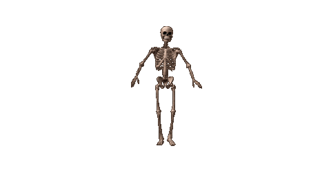

A skeleton is the structural frame that supports the body of most animals. There are several types of skeletons, including the exoskeleton, which is a rigid outer shell that holds up an organism's shape; the endoskeleton, a rigid internal frame to which the organs and soft tissues attach; and the hydroskeleton, a flexible internal structure supported by the hydrostatic pressure of body fluids. Vertebrates are animals with an endoskeleton centered around an axial vertebral column, and their skeletons are typically composed of bones and cartilages. Invertebrates are other animals that lack a vertebral column, and their skeletons vary, including hard-shelled exoskeleton (arthropods and most molluscs), plated internal shells (e.g. cuttlebones in some cephalopods) or rods (e.g. ossicles in echinoderms), hydrostatically supported body cavities (most), and spicules (sponges). Cartilage is a rigid connective tissue that is found in the skeletal systems of vertebrates and invertebrates.
